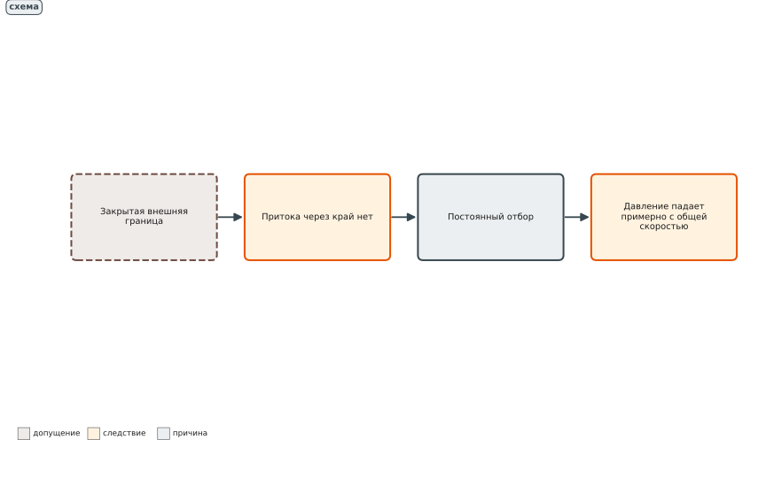
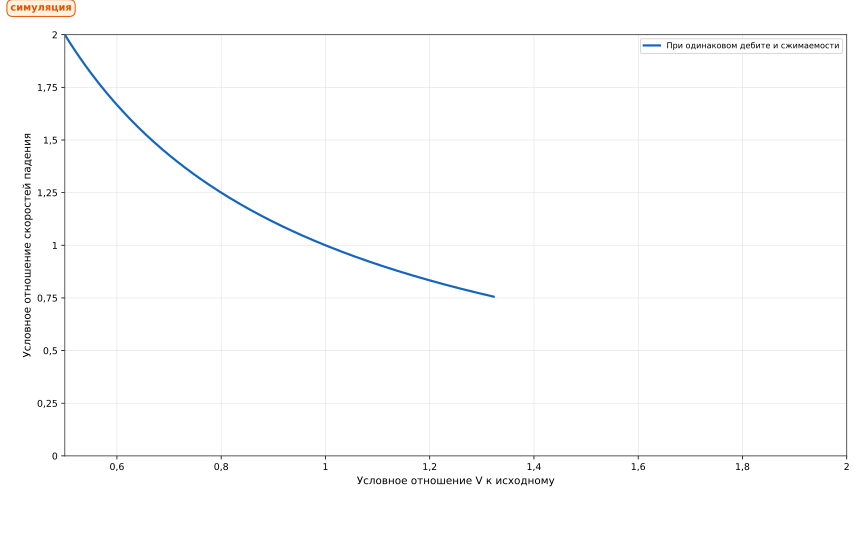
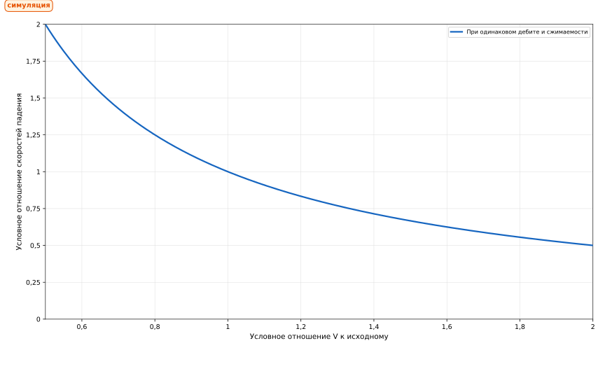

Стр. 77 · b) Semi Steady State condition
Fig. 5.2 Radial flow under semi steady state conditions.
В книге: «Условия решения» стр. 77
Опирается на: шаг 7 «Когда пласт кажется бесконечным» (предпосылка)
В закрытом пласте при постоянном отборе давление убывает примерно с одинаковой скоростью по всей области.
Одинаковый темп падения не означает одинакового давления во всех точках.
Пороговая идея. В псевдоустановившемся режиме выравнивается скорость падения давления, а не само давление. модель






Граница уже начинает влиять на отклик.
Допущения: Схемы и относительные оси условны; реальные замеры не использованы..
Градиент давления: Как быстро меняется давление в пространстве. Для закрытого случая режим наступает после того, как сказалось влияние внешней границы. Предполагают, что внешняя граница не пропускает жидкость в область дренирования. Градиент давления на непроницаемой внешней границе равен нулю. стр. 77
«This condition is applicable to a reservoir which has been producing for a sufficient period of time so that the effect of the outer boundary has been felt.»
«It is considered that the well is surrounded, at its outer boundary, by a solid "brick wall" which prevents the flow of fluids into the radial cell»
«$$\frac{\partial p}{\partial r} = 0 \quad \text{at} \quad r = r_e \tag{5.6}$$»
Пористость: Доля объёма породы, занятая порами. При постоянном дебите давление во всех точках снижается с приблизительно одинаковой скоростью. Скорость снижения выводят из материального баланса и определения сжимаемости. В радиальной ячейке поровый объём выражают через радиус границы, толщину и пористость. стр. 77
«Furthermore, if the well is producing at a constant flow rate then the cell pressure will decline in such a way that»
«The constant referred to in equ. (5.7) can be obtained from a simple material balance using the compressibility definition, thus»
«$$\frac{dp}{dt} = - \frac{q}{c \pi r_e^2 h \phi} \tag{5.10}$$»
Сжимаемость: Относительное изменение объёма при изменении давления; для изотермической величины температура постоянна. Автор применяет это условие к нефти и газу. При этом у газа сжимаемость не постоянна. стр. 77
«This is a condition which will be applied in Chapter 6, for oil flow, and in Chapter 8, for gas flow, to derive the well inflow equations under semi steady state conditions, even though in the latter case the gas compressibility is not constant.»
Нулевой градиент на внешней границе означает отсутствие перетока. стр. 77
| Обозначение | Что это | Единицы |
|---|---|---|
| $p$ | давление | — |
| $r$ | радиус, расстояние от центра скважины | — |
| $r_e$ | радиус внешней границы | — |
При постоянном дебите пространственно почти одинаковая скорость падения. стр. 77
| Обозначение | Что это | Единицы |
|---|---|---|
| $p$ | давление | — |
| $t$ | время после начала отбора | — |
| $r$ | радиус, расстояние от центра скважины | — |
Материальный баланс закрытой области. стр. 77
| Обозначение | Что это | Единицы |
|---|---|---|
| $c$ | изотермическая сжимаемость | — |
| $V$ | поровый объём или объём жидкости по контексту | — |
| $p$ | давление | — |
| $t$ | время после начала отбора | — |
| $q$ | объёмный дебит | — |
Скорость падения через дебит и доступную сжимаемую ёмкость. стр. 77
| Обозначение | Что это | Единицы |
|---|---|---|
| $p$ | давление | — |
| $t$ | время после начала отбора | — |
| $q$ | объёмный дебит | — |
| $c$ | изотермическая сжимаемость | — |
| $V$ | поровый объём или объём жидкости по контексту | — |
Скорость падения для радиальной ячейки. стр. 77
| Обозначение | Что это | Единицы |
|---|---|---|
| $p$ | давление | — |
| $t$ | время после начала отбора | — |
| $q$ | объёмный дебит | — |
| $c$ | изотермическая сжимаемость | — |
| $r_e$ | радиус внешней границы | — |
| $h$ | толщина пласта | — |
| $\phi$ | пористость, доля пор в объёме породы | — |
Ошибка: Одинаковая скорость падения означает одинаковое давление по всему пласту.
На самом деле: Условие задаёт производную по времени, а не равенство давлений. стр. 77
Скорость снижения получают из баланса: дебит относят к произведению сжимаемости на поровый объём.
В закрытом резервуаре равномерный расход опустошает доступную ёмкость; чем она больше, тем медленнее изменение.
Где аналогия перестаёт работать: Модель описывает давление через сжимаемость; она не означает одинакового давления или пустых подземных ёмкостей.
Верный ответ: Скорость падения давления
В этом режиме примерно постоянна производная по времени. Где это в тексте (стр. 77) →
Верный ответ: Толщина пласта; Пористость; Радиус границы
Объём определяют из геометрии радиальной ячейки и пористости. Где это в тексте (стр. 77) →
Каков градиент давления на закрытой границе?
На непроницаемой внешней границе градиент давления равен .
Верный ответ: На непроницаемой внешней границе градиент давления равен [нулю].
Нулевой градиент связан с отсутствием перетока. Где это в тексте (стр. 77) →
Все утверждения шага с дословной цитатой автора и страницей книги (по PDF).
Для закрытого случая режим наступает после того, как сказалось влияние внешней границы. наблюдение
«This condition is applicable to a reservoir which has been producing for a sufficient period of time so that the effect of the outer boundary has been felt.»
Внешняя граница не пропускает поступление жидкости в дренируемую область. допущение
«It is considered that the well is surrounded, at its outer boundary, by a solid "brick wall" which prevents the flow of fluids into the radial cell»
Градиент давления на непроницаемой внешней границе равен нулю. наблюдение
«$$\frac{\partial p}{\partial r} = 0 \quad \text{at} \quad r = r_e \tag{5.6}$$»
При постоянном дебите давление в ячейке снижается с приблизительно одинаковой скоростью. наблюдение
«Furthermore, if the well is producing at a constant flow rate then the cell pressure will decline in such a way that»
Скорость снижения выводят из материального баланса и определения сжимаемости. наблюдение
«The constant referred to in equ. (5.7) can be obtained from a simple material balance using the compressibility definition, thus»
В радиальной ячейке поровый объём выражают через радиус границы, толщину и пористость. наблюдение
«$$\frac{dp}{dt} = - \frac{q}{c \pi r_e^2 h \phi} \tag{5.10}$$»
Автор применяет это условие для нефти и газа, хотя у газа сжимаемость не постоянна. наблюдение
«This is a condition which will be applied in Chapter 6, for oil flow, and in Chapter 8, for gas flow, to derive the well inflow equations under semi steady state conditions, even though in the latter case the gas compressibility is not constant.»
Стр. 77 · b) Semi Steady State condition
Fig. 5.2 Radial flow under semi steady state conditions.
Стр. 77 · b) Semi Steady State condition
This condition is applicable to a reservoir which has been producing for a sufficient period of time so that the effect of the outer boundary has been felt. In terms of the radial flow model, the situation is depicted in fig. 5.2. It is considered that the well is surrounded, at its outer boundary, by a solid "brick wall" which prevents the flow of fluids into the radial cell. Thus at the outer boundary, in accordance with Darcy's law
Стр. 77 · b) Semi Steady State condition
$$\frac{\partial p}{\partial r} = 0 \quad \text{at} \quad r = r_e \tag{5.6}$$
Стр. 77 · b) Semi Steady State condition
Furthermore, if the well is producing at a constant flow rate then the cell pressure will decline in such a way that
Стр. 77 · b) Semi Steady State condition
$$\frac{\partial p}{\partial t} \approx \text{constant, for all } r \text{ and } t. \tag{5.7}$$
Стр. 77 · b) Semi Steady State condition
The constant referred to in equ. (5.7) can be obtained from a simple material balance using the compressibility definition, thus
Стр. 77 · b) Semi Steady State condition
$$cV \frac{dp}{dt} = - \frac{dV}{dt} = - q \tag{5.8}$$
Стр. 77 · b) Semi Steady State condition
$$\text{or} \quad \frac{dp}{dt} = - \frac{q}{cV} \tag{5.9}$$
Стр. 77 · b) Semi Steady State condition
which for the drainage of a radial cell can be expressed as
Стр. 77 · b) Semi Steady State condition
$$\frac{dp}{dt} = - \frac{q}{c \pi r_e^2 h \phi} \tag{5.10}$$
Стр. 77 · b) Semi Steady State condition
This is a condition which will be applied in Chapter 6, for oil flow, and in Chapter 8, for gas flow, to derive the well inflow equations under semi steady state conditions, even though in the latter case the gas compressibility is not constant.
На этот шаг опираются: шаг 9 «Как усреднить пластовое давление», шаг 10 «Когда давление перестаёт меняться».
Почему давление падает одинаково
Ссылки в ответе ведут к исходному тексту.